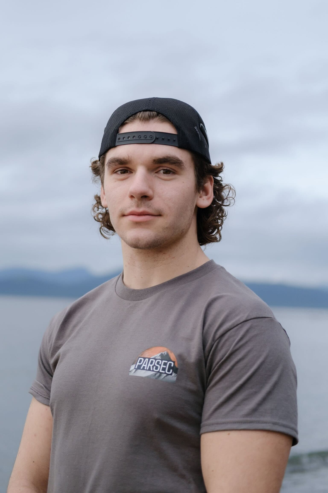
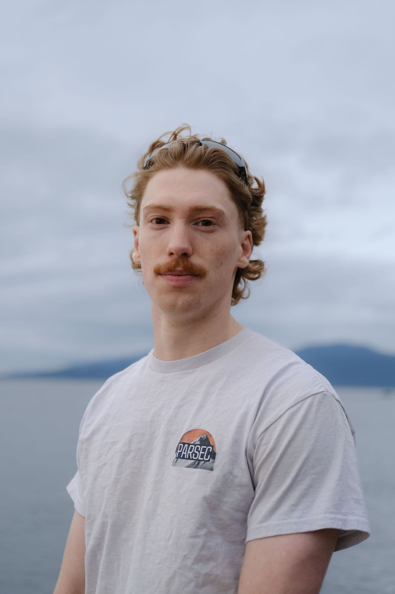
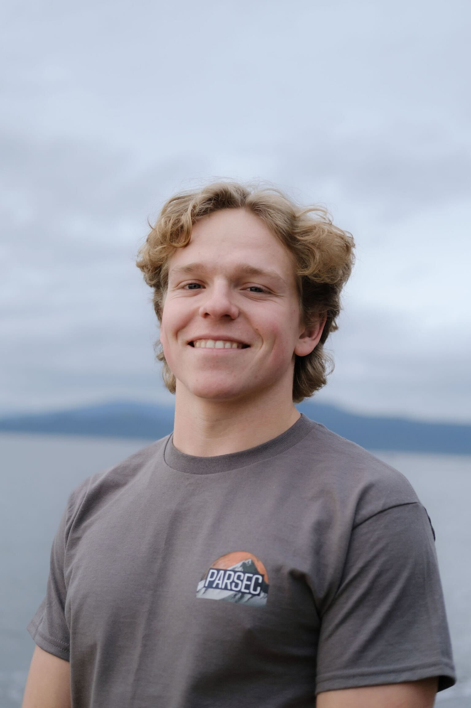
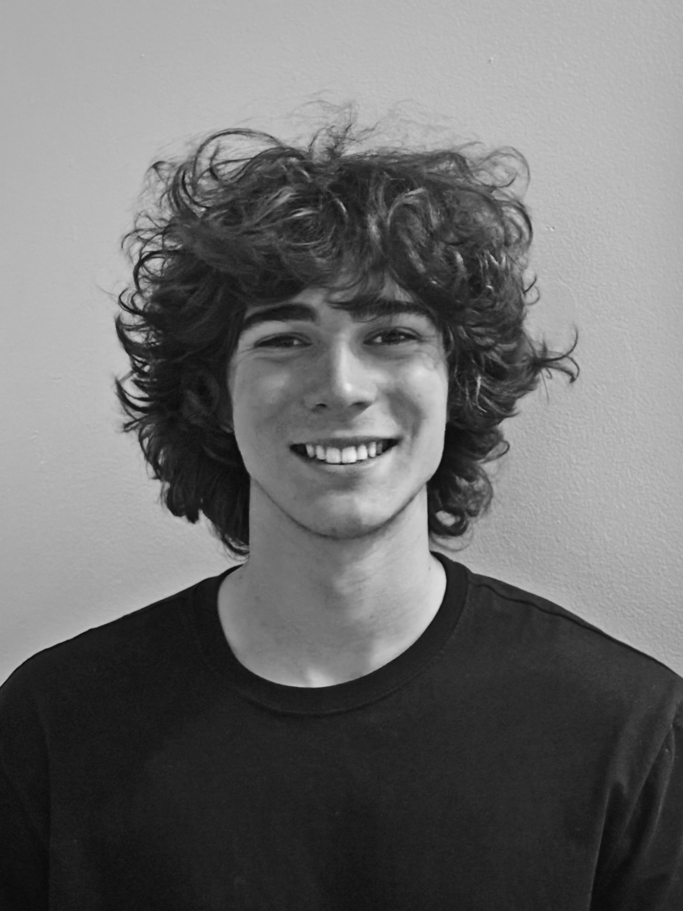

MEET THE HUMAN ANALOGUE LABS TEAM


Logan Stewart is a third-year engineering student at the University of British Columbia. As the CEO of Human Analogue Labs, Inc., Logan strives to push the boundaries of elite athleticism. Apart from HALO, Logan’s aspirations lay as a Special Forces Operator in the Canadian Armed Forces. While Logan has a background in powerlifting and Brazilian Jiu-Jitsu, he’s also completed many marathons and a number of ultra-marathons—his most notable being 111km in length. Using his engineering experience along with his knowledge in endurance, strength, and martial arts training, Logan leads HALO in the pursuit to develop modern-day, tip of the spear, athletics.
Brennan King is a fourth year kinesiology student at the University of Victoria, bringing a combination of clinical skills and passion for human movement to the HALO team. Brennan has worked as a student athletic trainer with JBAA rugby, volunteers at neuromotion physio clinic and has worked as a crew member in the BC wildfire service. Throughout this, he has developed his skillset as a kinesiologist, and has the ability to understand individuals goals/injuries and provide personalized plans for recovery. Currently, Brennan is recovering from an ACL and meniscus surgery, further developing his love and experience in the rehabilitation field. In his time off, Brennan is an avid mountain biker and skier, and has coached both of these sports. Within HALO, Brennan is developing the Cold Readiness Index, is involved in media production and the design of HALO fitness standards.


Chase Hobenshield is a second-year, Mechanical engineering student at the University of Victoria. While on the pathway to flying the latest generation of stealth-fighter jets in the Canadian Armed Forces, and eventually becoming an astronaut, Chase brings his high-level athletics to the HALO team. With a history of Junior Hockey, Chase now focuses his time training as a triathlete, on Brazilian Jiu-Jitsu, and optimizing functional fitness. Combining engineering skills with his elite athleticism, Chase works to develop the HALO functional fitness and optimization standards that will be used in the next generation of astronaut training.
Jonah Violini is currently completing an Interdisciplinary Studies degree at Thompson Rivers University, with plans to pursue a career in education. A lifelong athlete, Jonah competed in volleyball at the varsity level and continues to stay involved in the sport as a provincial referee and part-time coach. His passion for performance extends beyond the court. Jonah has consistently challenged himself through athletics and functional training such as calisthenics, embracing opportunities that test both physical and mental resilience - such as running a half-marathon in snowshoes through the mountains of British Columbia. At HALO, Jonah serves in an administrative and management capacity while also supporting business development initiatives. He brings a disciplined, optimistic, and team-oriented approach to the organization. Committed to continuous growth, Jonah strongly believes in HALO’s mission of helping individuals build stronger, more capable versions of themselves.
